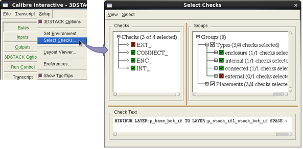

Use Calibre Interactive
to select specific checks for a verification run.
Procedure
- Select Setup >
Select Checks. The Select Checks dialog box opens. Checks
in the Groups area are grouped by type and placement—expand the
hierarchy as needed.
Figure 1. Select Specific Verification
Checks in Calibre Interactive 
- Click the checkbox next to
the check name or check group to enable or disable the checks at
run time. A green check mark indicates that the check is enabled,
a red cross indicates that the check is excluded.
Note: Use the View menu
to sort the checks and groups. Use the Select menu
to toggle check selection.
- Enable
or disable the “Types” checkbox to select or unselect all checks.
Results
Checks to execute at run time have
been specified. The selections made in the Select Checks dialog
box are not saved to the Calibre Interactive runset file.